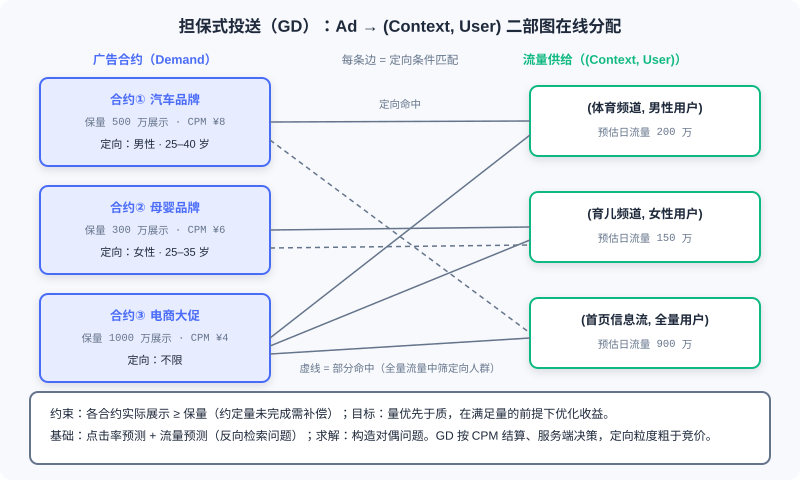

计费模式与核心指标
📝 Before You Continue: 建议先读完 12.1（广告生态全景），了解广告主、媒体、平台在交易链路中的角色分工；本章 12.2.4 的点击率建模与 Part 3 的排序模型一脉相承，若你已读过 3.x 的 CTR 模型，可以把本章看作它们在广告场景下的「经济学重述」。
你在搜索框里输入「跑鞋」，结果页的第一条是广告——它凭什么出现在那个位置？平台这一次展示预期收多少钱？这些问题背后没有玄妙的算法黑盒，答案写在两样东西里： 计费模式（Billing Model） 决定谁在哪个环节付钱， 核心指标（Metrics） 决定系统用什么尺子比较候选广告。
推荐系统优化的是用户体验与业务目标的模糊组合，而广告系统从第一天起就把「钱」写进了目标函数。计费模式像一部 宪法 ：它规定了广告主与媒体之间风险的归属，此后系统里的检索、排序、流量预测、探索策略，都必须在这部宪法的框架下工作。换一种计费模式，整个技术栈的形态都会随之改变。
本章我们从广告主与媒体的价值模型冲突出发，走过从 CPT 到 CPS 的计费谱系，建立以 eCPM 为统一度量衡的排序逻辑，再进入合约广告的在线分配与点击率预估的工程细节。这些内容是 12.3 竞价机制的地基——先弄清「怎么算账」，才能理解「怎么定价」。
读完本章，你将能够：
- 列举 CPT/CPD、CPM、CPC、CPA/CPS 各计费模式的计费公式、关键决策方与风险归属
- 用 CTR、CVR、ROI 三个指标刻画广告效果，并用 完成跨计费模式的排序计算
- 说明品牌广告与效果广告在计费方式与交易方式上的分野
- 描述 担保式投送（GD） 与 在线分配 的二部图结构及其求解思路
- 解释点击率预估为何是回归问题而非排序问题，以及冷启动 back-off 与 E&E 的应对策略
- 完成 5 道分层练习题，打通从指标换算到 GSP 支付的计算链路
12.2.0 为什么计费模式是广告系统的「宪法」
任何商业产品都要回答「怎么收钱」，但在线广告的特别之处在于： 计费单位的选择，本质上是在分配「效果不确定性」带来的风险。广告从展示到点击、再到转化，每往后走一步，不确定性都更大；在哪一步收费，就等于把这一步之后的所有风险推给了某一方。所以说计费模式是广告系统的宪法——它先于一切算法，定义了博弈的规则。
先站在 广告主（Advertiser） 这一边看。广告主的价值模型核心是 按最终效果反推单次广告的价值。假设卖一辆车的营销成本是 2000 元，而从广告展示到最终完成购买的转化率是 0.1%，那么一次广告展示的价值就是 元——无论媒体觉得自己的首页 banner 多么黄金，广告主心里那杆秤只认这个数。现实中的计算当然更复杂，但原理不变：从钱的方向倒推。按这个逻辑， CPA（Cost Per Action，按行为付费） 甚至 CPS（Cost Per Sales，按销售付费） 的计价模式是最贴合广告主价值模型的。
再站到 媒体/供应方（Supply Side） 这一边。媒体关心的不是广告主能卖多少车，而是 单位广告资源能产生多少收入——首页 banner 今天值多少钱，明天还值多少钱。由此自然产生了 CPT（Cost Per Time，包时段付费）、CPM（Cost Per Mille，千次展示付费） 这类「卖资源」的计价模型：把广告位当作待出租的商铺，计量直接、收入稳定。
显然，双方对「广告资源用量」的认知是不同的，必然存在博弈——要警惕的一个误区是，媒体利益与广告主利益是 相关博弈 的关系，而非一致。博弈的最终结果，是广告计量演化出两大类。效果广告（Direct Response） ：供应方根据广告效果计算广告量，这种模式最初是从广告主利益出发的——早期它确实可能伤害供应方，因为广告创意不佳时，即使分配了大量曝光，点击率依然很低。但随着技术发展，这一问题已被克服：系统通过对广告点击率等数据的分析，自动降低这些「低利润」广告的投放比例，或要求广告主提高出价。品牌广告（Brand Awareness） ：根据展示量计费，这对供应方来说更直接，对没有直接转化目标的广告需求（如新品认知）也更适用。
🧠 Mental Model: 商铺出租的三种收租方式
把媒体想成房东。CPT 是「整栋包租」：租客付固定租金，生意好坏与房东无关，风险全在租客。CPC 是「按进店人数收费」：房东得想办法引来可能进店的人流，租客则为每个进店的人买单。CPS 则是「纯提成伙计」：卖出才分成，卖不出分文不取——风险全在替他吆喝的平台一方。计费模式谱系上的每一次移动，本质上都是风险在房东与租客之间的重新分配。
Analysis: 计费模式的选择并非纯技术决策，而取决于双方的数据能力与对转化链路的掌控。当平台对「从展示到成交」的全链路有足够掌控力、且广告主（卖家）的服务流程大体相同时——例如淘宝的广告平台——CPA/CPS 类结算才真正可行。链路越不可控，计费单位就越要往展示端收缩。
12.2.1 计费模式谱系：从买时段到买销售
有了「风险归属」这把钥匙，我们可以把主流计费模式排成一条谱系：从按时间买断，到按展示、按点击、按行为、按销售付费。计费单位离最终转化越近，广告主的价值模型越贴合，平台承担的风险也越大。
CPT（Cost Per Time，包时段付费）与 CPD（Cost Per Day，包天付费） 是谱系最左端。国内很多网站至今仍按「一个月多少钱」的固定收费模式售卖广告位，阿里妈妈的按周计费广告、门户网站的包月广告都属于此类。它粗糙——展示给了谁、有没有人看，一概不知，无法保障客户的利益；但也省心，能给网站带来稳定收入，因此常见于 合约的品牌广告 ，出现在各个网站的核心 banner 模块。相比 CPS，CPD 对合作的基础条件没有过高要求、容易促成双方合作；劣势在于长期合作中不如 CPS 实时有效。
CPM（Cost Per Mille，千次展示付费） 向效果迈出了第一步：
其中「消耗」即广告主投放广告的花费。CPM 意为每千人印象成本，按曝光量收费，让广告开始向「面向效果」方向进化，也是 RTB（实时竞价）系统的常见计费方式。CPC（Cost Per Click，每点击付费） 再进一步：
关键词广告等依据效果付费的形式一般采用这种定价模式，同样是 RTB 中的主流计费方式。CPA（Cost Per Action，按行为付费） 则根据每个访问者对网络广告所采取的行动收费，行为有特别定义——形成一次交易、获得一个注册用户等。CPS（Cost Per Sales，按销售付费） 按实际销售产品的提成换算广告刊登金额，广告主为规避广告费用风险，按照点击之后产生的实际销售提成付费，常见于网络联盟中各个小网站的计费。
dCPM（dynamic CPM，动态千次展示付费） 值得单独一说。它是 DSP（需求方平台）普遍采用的结算体系：与市场上讲的固定 CPM（相应地称为 flat CPM）不同，dCPM 基于 RTB 技术诞生，指的是 每一次 impression 的出价都是变化的。其每次出价均依据广告主广告投放的效果（一般是 CPS）来实时计算，以得出对广告主最有利的价格，从而保证广告主的利益；同时又因为以 impression 与媒体结算，也确保了媒体的收益。一句话概括：对媒体按展示结算、对广告主按效果优化——dCPM 正是我们在 12.2.0 说的双方博弈的一个工程化解法。

如图，谱系左端风险压在广告主肩上，右端压在平台肩上，CPC 居中平衡。更精确地说，可以用「谁做关键决策」来标注风险归属： CPM 市场里 eCPM 固定，相当于决策（与风险）全部交给广告主——平台保证展示，展示之后能否带来点击与转化，平台概不负责。CPC 市场是折中 ：点击价值由广告主判断（体现在出价），点击率则由更了解流量的平台动态预估（如 Google）——平台用 CTR 预测来管理自己承担的那部分风险。CPA/CPS 市场两者均动态，相当于平台做决策，风险归于平台 ；淘宝广告平台采取此类结算，正因为其广告主（卖家）的服务流程大致相同，平台对转化链路的掌控足够强。
| 计费模式 | 计费单位 | 谁做关键决策 | 风险归属 | 典型场景 |
|---|---|---|---|---|
| CPT/CPD | 时段 / 天 | 媒体定价，广告主买断 | 广告主 | 品牌包段、核心 banner |
| CPM | 千次展示 | 平台保量，eCPM 固定 | 广告主 | RTB 展示竞价、GD 合约 |
| CPC | 每次点击 | 广告主定点击价值，平台预估 CTR | 双方共担（折中） | 关键词广告、广告网络 |
| CPA | 每次行为 | 平台 | 平台 | 服务流程标准化的生态（如淘宝） |
| CPS | 每次销售 | 平台 | 平台 | 网络联盟、返利 |
💡 Key Insight: 经济学有句话叫「价格围绕价值上下波动」，好的定价机制应当让价格无限逼近价值。但广告主与供应方对「价值」的认知天然错位，静态定价谈不拢，于是市场给出的答案是——让市场自己定价。竞价模式是目前双方都能认可的定价方式，其核心问题是如何让更多的需求方参与竞价、如何提供更细粒度的竞价，这正是 12.3 的主题。
12.2.2 核心指标体系：eCPM 统一度量衡
计费模式定了规矩，还需要一套指标来度量「规矩执行得怎么样」。三个最基础的效果指标构成了广告数据分析的通用语言。
CTR（Click-Through Rate，点击率） 衡量一个广告在多次展现中用户的平均点击次数：
CVR（Conversion Rate，转化率） 衡量用户的点击和最后下单之间的关系：
ROI（Return On Investment，投资回报率） 衡量广告主花钱打广告带来的成交额与广告花费之间的关系：
这三个指标层层递进：CTR 是平台的「供给侧指标」——它决定了流量质量；CVR 连接点击与转化，刻画需求端的成色；ROI 则是广告主最终投票的依据——ROI 长期低于 1（或行业可接受阈值）的广告主会用脚投票，撤走预算。
问题来了：当 CPC 计费的广告和 CPM 计费的广告同场竞技时，平台怎么比较它们？答案是 eCPM（effective CPM，千次展示期望收益）——每千次展示的期望收益，它把所有计费模式折算到同一把尺子上：
- CPC 计费下 ：。其中 pCTR 是平台对这次展示点击率的预估，bid 是广告主按点击出的价；两者相乘即「每次展示的期望收入」，再乘 1000 折算到千次展示。
- CPM 计费下 ：。千次展示本身就要付这么多钱，期望收益就是出价本身。
于是平台的排序逻辑水到渠成： 对每次展示机会，把所有候选广告折算成 eCPM，按 eCPM 降序排列 ，依次分配展示位。看一个数值例子：广告 A 出价 2.0 元、pCTR 3%，广告 B 出价 5.0 元、pCTR 1%，广告 C 出价 1.0 元、pCTR 8%。三个广告的 eCPM 分别是 元、 元、 元。出价最高的 B 反而垫底——它的点击概率太低，赢下这次展示对平台而言并不划算；最终 C 胜出。

如图所示，eCPM 是广告市场的「通用货币」：无论候选来自哪种计费模式，先兑换成 eCPM 才能同台比较。这也解释了为什么 12.2.0 说计费模式是宪法——eCPM 公式的形态完全由计费模式决定，而 pCTR 是否准确（12.2.4）直接决定这把尺子准不准。
🧠 Mental Model: 机场货币兑换柜台
想象一个免税店同时收美元、欧元、日元。收银台不会拿三种货币直接比大小，而是先按汇率全部折成美元再标价。eCPM 就是广告交易的汇率柜台：CPC 的「美元」、CPM 的「欧元」、CPA 的「日元」，统统折成「每千次展示期望多少收益」。汇率（pCTR、bid）一旦算错，标价就失真——这正是下一节 CTR 预估的分量所在。
最后把 12.2.0 的两大广告形态在此收拢： 品牌广告按展示量计费、以合约方式交易 （CPT/CPD/CPM，注重长期影响）， 效果广告按效果计费、以竞价方式交易 （CPC/CPA/CPS，追求短期转化行为）。两类广告在投放时机、创意形态、系统模块上分流，但只要进入同一个广告位，平台仍然用 eCPM 这把尺子统一裁决。
12.2.3 合约广告与在线分配：先保量，再保质
竞价是现代广告的主角，但在它之前，合约广告统治了互联网广告的第一个十年，至今仍占据高端品牌预算。理解它是理解整个广告系统演化的必要一环。
担保式投送（Guaranteed Delivery, GD） 是合约广告的核心机制，其要点可以概括为： 基于合约的广告机制，约定的展示量未完成需要补偿 ；采用「量优先于质」的方式——先把量保住，再谈优化；以 CPM 结算 ；投送由 服务端决策 （而非竞价时实时决定）。GD 的受众定向建立在两项预测技术之上： 点击率预测 与 流量预测——前者估计「展示给某人群的效果」，后者估计「未来某类流量有多少」，二者共同支撑「能否在合约期内完成保量」的承诺。
合约广告的技术核心是 在线分配（Online Allocation） 问题：把广告与流量的匹配建模为 Ad → (Context, User) 的二部图优化。图的一侧是携带定向条件的广告合约，另一侧是 (上下文, 用户) 联合刻画的一次次流量供给；每次展示到来时，系统要在「满足各广告主合约量」的约束下完成分配。目标函数可根据需要调整（如最大化总收益或总点击），经典解法是 通过构造对偶问题求解——把每个合约的量约束转化为对偶变量（影子价格），在线分配时按「收益减影子价格」的净值得失做决策。

如图，合约①（汽车品牌，定向男性 25–40 岁）可以匹配 (体育频道, 男性用户) 的流量，也能从 (首页信息流, 全量用户) 中筛出定向人群；合约③定向不限，则与所有供给节点相连。分配算法要在流量预测给出的供给量之上，为每条流量选一个「既能完成保量、又尽量高价值」的合约。
流量预测 本身是个有趣的问题：它可以视为以广告 为 Query、对 空间进行检索的 反向检索问题。困难在于 联合空间规模过大，需对 、 分别处理——这与正向的「以用户请求检索广告」恰好是同一枚硬币的两面。
Analysis: 在线分配与竞价（12.3）的分工可以这样理解：合约的定向粒度粗（按人群包、频道售卖），竞价的定向粒度细（到单次展示、单次出价）；合约卖确定性（保量、补偿），竞价卖不确定性（价高者得）。GD 的缺点是受众定向分类不够细致，且合约销售中品牌广告主对曝光有独占要求（如竞品排斥），进一步收紧了分配的自由度。当一个市场的流量供给和需求都足够稠密时，粗粒度合约会逐步让位于细粒度竞价——这就是广告形态从展示量合约走向 RTB 的经济学动因。
12.2.4 点击率预测：承接排序模型的新使命
12.2.2 已经埋下伏笔：CPC 计费下 eCPM = pCTR × bid × 1000，点击率预估的准确度直接决定排序这把尺子准不准。现在我们把 CTR 预估当作一个独立的建模问题来看——它与你在 Part 3 见过的排序模型既同源、又不同命。
CTR 预测的标准形式是概率模型 ：给定广告 、用户 、上下文 ，估计用户点击的概率。你可能会想：这不就是 Part 3 的点击率模型换个场景吗？模型结构确实可以复用，但 任务性质变了——回归比排序更合适。推荐系统的排序模型只需保证候选间相对顺序正确（AUC 高即可），而广告的实际排序依据是 eCPM：CTR 预估要 乘以出价 之后再比较。一个系统性高估CTR 的模型，会把低出价广告推到不该有的高位；系统性低估则相反。换言之，广告系统需要的是 尽可能准确的 CTR 绝对值 ，而不仅是候选间的相对排序正确——这是 CTR 建模区别于推荐排序的第一性原理。
新广告冷启动：层级结构 back-off
新广告上线时没有任何点击统计，pCTR 从何而来？答案是 利用广告的层级结构 ： creative → solution → campaign → advertiser （创意 → 投放单元 → 广告计划 → 广告主）。新创意没有统计，但它所属的 campaign 可能有；campaign 也没有，就再往上退到 advertiser 一层，用同广告主历史广告的 CTR 及广告标签来估计。这种 back-off（回退） 策略与推荐系统处理新物品的思路一致：用结构先验弥补统计缺失。
动态特性：动态特征与在线学习的权衡
广告市场的分布变化极快——素材疲劳、季节波动、突发热点都会让昨天训练的模型今天失准。应对之道有两个方向，各有代价。动态特征 ：在标签组合维度上聚合点击反馈统计，作为特征喂给模型（即多层次点击反馈），特点是「快速调整特征」——模型不动、特征实时变；其优势是工程架构扩展性强、对新 组合有较强的 back-off，缺点是在线特征存储量大、更新要求高。在线学习 ：让模型本身随新数据流式更新，「快速调整模型」，代价是训练与服务的工程复杂度。工业系统常两者并用：动态特征兜住短周期波动，在线学习跟上中长期漂移。
探索与利用：为长尾组合积累统计量
无论特征多好、模型多新，都绕不开一个冷峻的事实： 组合空间近乎无限，绝大多数组合从未获得过展示，其 CTR 无从估计。E&E（Exploration & Exploitation，探索与利用） 框架的任务就是：为长尾 组合创造合适的展示机会以累积统计量，从而更准确地估计 CTR、提升整体广告收入。探索不是做慈善——今天的「浪费」是一次投资，为的是明天更准的预估；但探索的量和有效性需要严格控制，否则直接侵蚀当下收益。三种经典策略：
- ε-greedy ：以 ε 比例的流量随机探索，其余流量利用当前最优。实现最简单，探索效率也最低。
- UCB（Upper Confidence Bound，上置信界） ：为每个候选计算期望收益的上置信界，选 UCB 最大的 arm；被选择次数越多，UCB 越接近真实期望收益——天然兼顾「没试过的要多试」与「表现好的要多用」。
- Contextual Bandit（上下文老虎机） ：对每次展示，用 arm 的 特征矢量 代替 arm 本身做决策，实现降维——不必为每个具体广告单独估计，而是在特征空间中泛化，恰好呼应 back-off 的层级思想。
Analysis: E&E 的三种策略在广告场景中的适用性：ε-greedy 适合作为保底策略或冷启动初期；UCB 在候选集合较小时收益明确，但候选数巨大时上界计算与存储都是负担；Contextual Bandit 用特征降维绕开了候选爆炸，是现代广告系统探索模块的主流形态。共同的原则是：探索流量必须「花在刀刃上」——优先探索那些一旦估准、期望收益提升最大的长尾组合。
到这里，一次广告请求的决策链已经完整：候选广告经定向检索进入排序，pCTR 模型给出点击概率，与出价相乘折算成 eCPM，降序排列后由高到低分配展示。但请注意——eCPM 排序只是入场券，它决定谁上场；真正决定平台「收多少钱」的，是竞价机制。同一个 eCPM 第一名，按 GSP（广义第二高价）机制支付的价格可能与自己的出价相去甚远。谁该付多少、为什么诚实出价可能是（也可能不是）最优策略、VCG 如何用「外部性」定价——这些问题属于机制设计的领地，我们在 12.3 展开。
⚠️ Common Mistakes in 12.2
| # | Mistake | Example | Why It's Wrong | Fix |
|---|---|---|---|---|
| 1 | 把 CTR 预估当排序问题 | 「AUC 够高就行，绝对值无所谓」 | 广告按 eCPM 排序，CTR 要乘以出价；系统性高估/低估都会改变排序与计费 | 按回归/校准问题评估，关注预估绝对值与真实值的偏差 |
| 2 | 混淆 eCPM 与 CPM | 「eCPM 就是千次展示成本」 | CPM 是计费模式（成本口径），eCPM 是千次展示 期望收益 （收入口径），是排序的统一度量衡 | 记住 e = expected / effective，eCPM 服务于平台排序决策 |
| 3 | 认为 CPA/CPS 对平台更优 | 「按效果收费平台肯定赚得多」 | CPA/CPS 下点击率与价值皆动态，决策与风险全归平台，转化链路不可控时平台血亏 | 只有链路掌控强、服务流程标准化的生态（如淘宝）才适用 |
| 4 | 认为越精准的广告市场价值越大 | 「精准投放 + 大数据必然显著提高营收」 | 媒体与广告主是相关博弈关系，精准投放的收益归属取决于计费与定价机制 | 从风险归属与博弈角度分析每一方的激励 |
| 5 | 忽视 dCPM 与 flat CPM 的区别 | 「dCPM 不就是 CPM 吗」 | flat CPM 千次价格固定；dCPM 每次印象的出价都随投放效果实时变化 | 区分「与媒体按展示结算」和「对广告主按效果优化」两个口径 |
| 6 | 合约分配只做 CTR 预测、不做流量预测 | 「模型够准就能完成保量」 | GD 的量约束靠流量预测支撑；供给估计错了，保量承诺必然落空 | 在线分配 = 点击率预测 + 流量预测，二者缺一不可 |
本章小结
📌 Key Takeaways
| Concept | Key Points | Why It Matters |
|---|---|---|
| 计费模式即宪法 | 计费单位决定风险归属：广告主按效果反推价值，媒体关心单位资源收入 | 一切广告算法都在计费模式划定的博弈规则下工作 |
| 计费谱系 | CPT/CPD → CPM → CPC → CPA/CPS，风险从广告主渐移向平台 | 选错计费模式的平台会把风险揽到自己身上 |
| 三大指标 | CTR=点击/展现，CVR=下单/点击，ROI=下单金额/消耗 | 广告数据分析的通用语言 |
| eCPM | CPC 下 = pCTR×bid×1000；CPM 下 = 出价；按其降序排序 | 跨计费模式的统一度量衡，排序的尺子 |
| GD 与在线分配 | 保量、未完成需补偿、量优先于质、CPM 结算；Ad→(Context,User) 二部图，对偶求解 | 合约广告的技术核心，与竞价形成粗/细粒度互补 |
| CTR 预估 | 回归而非排序（需要绝对值准确）；冷启动用 creative→advertiser 层级 back-off；动态特征 vs 在线学习；E&E 积累长尾统计 | eCPM 排序的准确性完全依赖 pCTR 的校准 |
❓ FAQ
Q1: CPC 计费下，平台如何管理自己承担的风险？
A: 平台对点击率更了解（如 Google），通过 CTR 预估把「展示后会不会被点击」的不确定性管起来：对 pCTR 低的广告降低展示比例或要求更高出价。这正是 CPC 被称为风险折中点的原因——广告主判断点击价值并出价，平台预估点击率并兜住流量质量。
Q2: 为什么 CPM 计费下 eCPM 就等于出价？
A: CPM 计费按千次展示收费，广告主的出价本身就是「千次展示愿意付的钱」，也就是平台千次展示的期望收益，无需再乘 pCTR。这也意味着 CPM 市场的 eCPM 固定，决策与风险全部交给了广告主。
Q3: 合约广告与竞价广告的本质区别是什么？
A: 三点：交易方式上，合约是提前协商的担保式售卖，竞价是实时交易；计费上，合约以 CPM 展示量结算、量优先于质，竞价按 CPC/CPA 等效果计费；定向粒度上，合约按人群包/频道等粗粒度售卖且品牌主有独占要求，竞价可细到单次展示。市场供需越稠密，越有利于细粒度竞价。
🔗 前后关联
- 12.1 （广告生态全景）中的广告主、媒体、平台角色分工，是本章风险归属分析的前提。
- 12.3 （竞价机制）承接本章结尾：eCPM 排序决定谁上场，GSP/VCG 等机制决定收多少钱。
- 3.x （排序模型）的 CTR 模型结构是本章 pCTR 建模的基础，但广告场景对绝对值校准提出了更高要求。
- 8.3 （端到端生成式广告）把竞价机制内嵌进生成模型，可视为本章 eCPM 排序与 12.3 竞价机制在前沿架构下的统一。
Practice Problems
Work through all problems in order — they get progressively harder. Each has a complete solution you can reveal after trying it yourself.
Problem 12.2.1 — 指标换算 🟢 Easy
某电商广告主一天消耗 600 元，获得 150,000 次展示、3,000 次点击、120 个订单，订单总金额 3,600 元。请计算 CPM、CPC、CTR、CVR、ROI。
Sample Input: 消耗 600 元；展示 150,000；点击 3,000；订单 120；下单金额 3,600 元
Sample Output: CPM = 4 元，CPC = 0.2 元，CTR = 2%，CVR = 4%，ROI = 6
💡 Solution (click to reveal)
Approach: 直接套用五个指标的公式。
Key points:
- CPM 与 CPC 互为倒数关系换算：，代入 验证一致。
- ROI = 6 意味着每花 1 元广告费带来 6 元成交额——这是广告主续投的核心依据。
Problem 12.2.2 — eCPM 排序 🟡 Medium
某广告位一次请求收到三个 CPC 计费的候选：广告 A 出价 1.5 元、pCTR 2%；广告 B 出价 6.0 元、pCTR 0.5%；广告 C 出价 3.0 元、pCTR 1.2%。请计算各自的 eCPM 并给出展示顺序。若还有一个 CPM 计费的广告 D 直接出价 40 元（千次展示），它应排在第几位？
💡 Solution (click to reveal)
Approach: CPC 计费用 ，CPM 计费 eCPM 即出价。
- A： 元
- B： 元
- C： 元
- D：CPM 计费，eCPM = 40 元
降序排列： D（40）> C（36）> A（30）= B（30）。A 与 B eCPM 相同，可按次要规则（如质量分、出价）打破平局。
Key points:
- eCPM 让不同计费模式的广告同台竞技：D 不需要乘 pCTR，因为它的期望收益与点击无关。
- B 出价最高（6 元）却与出价最低的 A 并列垫底——高出价救不了低点击率。
Problem 12.2.3 — CTR 预估的校准问题 🟡 Medium
模型甲与模型乙在同一个广告位上 AUC 完全相同（候选间相对顺序一致），但模型甲对所有广告的 pCTR 系统性低估一半（真实 CTR 2% 时预估 1%）。在 CPC 计费、存在 CPM 广告竞争的环境下，这会对排序和平台收入造成什么影响？
💡 Solution (click to reveal)
Approach: eCPM = pCTR × bid × 1000，pCTR 被低估一半等价于所有 CPC 广告的 eCPM 被砍半。
排序上：CPC 广告的 eCPM 整体下移，本应胜过高 eCPM CPM 广告（如出价 40 元）的优质 CPC 广告可能落败——例：某广告真实 ，被低估后只剩 30，输给了 40 元的 CPM 广告。收入上：平台错失期望收益更高的展示，同时低点击率广告的惩罚也被同比例弱化，流量质量下滑。
Key points:
- 这就是「回归比排序更合适」的原因：AUC 衡量相对序，而 eCPM 排序需要 CTR 绝对值准确。
- 广告系统对 CTR 模型的校准（calibration）要求，是它区别于推荐排序模型的关键工程约束。
Problem 12.2.4 — UCB 探索策略 🔴 Hard
某 E&E 模块用 UCB 管理两个候选广告的探索。目前总请求 次：广告甲被选 100 次、平均点击率 0.10；广告乙被选 10 次、平均点击率 0.08。按 计算两者的 UCB（），判断下一次展示选谁，并解释为什么平均点击率更低的反而可能胜出。
💡 Solution (click to reveal)
Approach: 分别计算置信半径 再加均值。
- 甲：，
- 乙：，
下一次展示选 广告乙。乙平均点击率虽低，但只被试了 10 次，估计的不确定性（置信半径）极大，其真实点击率可能远高于当前观测——UCB 为长尾组合创造展示机会以累积统计量，正是 E&E 的核心动机。随着乙被选择次数增多，其半径收缩，UCB 将逐渐逼近真实期望。
Key points:
- UCB 项 = 均值 + 不确定度，天然平衡探索（半径大）与利用（均值高）。
- 探索的量必须严格控制：本例中若把大部分流量都给乙，短期收入会受损——E&E 是投资而非慈善。
🏆 Challenge: eCPM 排序 + GSP 支付
某广告位（CPC 计费）有三个候选：广告 A 出价 3.0 元、pCTR 2%；广告 B 出价 4.0 元、pCTR 1%；广告 C 出价 2.0 元、pCTR 2.5%。(a) 计算 eCPM 并给出排序；(b) 若采用 GSP（广义第二高价）机制，胜者按「下一名的 eCPM 折算到自己计费口径」支付，即支付 CPC = 下一名 eCPM ÷ 胜者 pCTR ÷ 1000，求胜者的实际点击单价；(c) 验证该单价不超过胜者出价（个体理性），并说明 GSP 的完整博弈性质在 12.3 哪里展开。
💡 Hint
(a) A：；B：；C：。排序 A > C > B。
(b) 胜者 A 支付 = 下一名 C 的 eCPM ÷ (A 的 pCTR × 1000) = 元/点击。
(c) 满足个体理性——广告主永远不会支付超过自己的出价。注意支付价由 下一名 的 eCPM 与 自己 的 pCTR共同决定：这正是「eCPM 排序决定谁上场、竞价机制决定收多少钱」的含义。GSP 并非 truth-telling（与 VCG 不同），广告主有压价博弈的激励，完整的机制分析（VCG、GSP 的均衡性质）见 12.3。